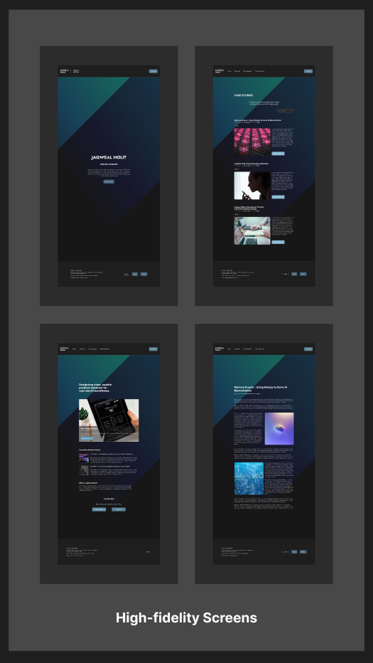

Case Study
End-to-End Portfolio Experience
A brief look into the product design that creates how a user would navigate the website — from landing page to a featured article.
Overview
Purpose
This project demonstrates an end-to-end product design approach through user flow, wireframing, high-fidelity design, and a simple interaction path.
This is not a full website prototype, but a focused exploration of navigation experience.
Scope
What’s Included
- User Flow
- Wireframe
- High-Fidelity Screens
- Prototype Demonstration
Flow
User Navigation
- Landing Page
- Homepage → Case Studies
- Article Entry Point
- Article Page
Design
Design Overview



Interaction
Prototype
View Interactive Prototype in Figma